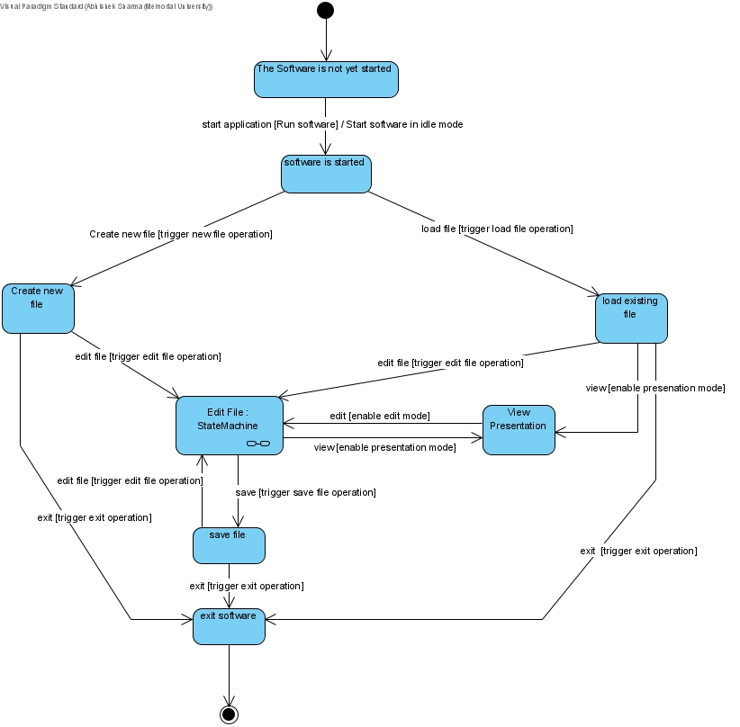

Specification
Table of contents
Use Case Diagram

State Diagram

User Stories
R0: User will be able to save the presentation to a file by the presentation software.
R1: User will be able to load the presentation from a file by the presentation software.
In Edit mode:
R2: User will be able to add graphical objects to the presentation.
R3: User will be able to delete graphical objects from the presentation.
R4: User will be able to move graphical objects.
R5: User will be able to add a state at any point.
R6: User will be able to delete a state at any point.
R7: User will be able to view the presentation at any state.
R8: User will be able to change the values of the various attributes of graphical objects in the state currently being viewed.
R9: User will be able to change the trigger condition for moving from one state to the next.
R10: User will be able to change the way that interpolation during a transition happens.
R11: User will be able to change the amount of time it takes to move from one state to the next.
R12: User will be able to zoom, pan, and orient (operand) the current view-port.
R13: User will be able to move from edit mode to presentation mode either starting at the beginning or starting at the current state.
R14: User will be able to undo in Edit mode.
R15: User will be able to redo in Edit mode.
R16: User will be able to cut, copy, and paste operations using the platform's clipboard.
R19: Software will contain a camera to indicate the region of the sheet
In Presentation mode:
R17: User will be able to exit Presentation mode and entering Edit mode.
R18: User will be able to control the state of the presentation.
Use Cases
-
Save file
Use case name: SaveFile
Actor: User
Requirement addressed: R0
Precondition: a new presentation has been finished
Typical flow: click the "save" button
Postcondition: the presentation is saved to the designated folder -
Load File
Use case name: LoadFile
Actor: User
Requirement addressed: R1
Precondition: a certain presentation file existed in the designated folder
Typical flow:- Click the "load" button
- Select the presentation file which user need
Postcondition: the presentation loaded to the software
-
Add Graph Objects
Use case name: AddGraphObj
Actor: User
Requirement addressed: R2
Precondition: in the edit mode
Typical flow:- Choose a kind of graph object to add through button
- Determine the position of the graph object through dragging mouse (MoveGraph)
Postcondition: a graph object is added
-
Delete Graph Objects
Use case name: DeleteGraphObj
Actor: User
Requirement addressed: R3
Precondition: in the edit mode and at least one graph object has been added
Typical flow:- Select the object which is needed to delete
- Click the "delete" button
Postcondition: a graph object is deleted
-
Move Graph Objects
Use case name: MoveGraph
Actor: User
Requirement addressed: R4
Precondition: in the edit mode and at least one graph object has been added
Typical flow:- Select the object and drag the mouse to the destination
- Move the object
Postcondition: a graph object is moved
-
Add State
Use case name: AddState
Actor: User
Requirement addressed: R5
Precondition: in the edit mode
Typical flow: add any operation of the presentation or change the attributes of objects
Postcondition: a new state is added -
Delete State
Use case name: DeleteState
Actor: User
Requirement addressed: R6
Precondition: in the edit mode
Typical flow: Delete any operation of the presentation
Postcondition: a state is deleted -
View presentation
Use case name: ViewPresentation
Actor: User
Requirement addressed: R7
Precondition: in the edit mode
Typical flow: Click the "presentation" button
Postcondition: current edit mode is presented -
Change Attributes of Object
Use case name: ChangeAttributes
Actor: User
Requirement addressed: R8
Precondition: in the edit mode and at least one graph object has been added
Typical flow:- Select the object user wants to change
- Click the mouse to choose the attributes
- Change the value of attributes
Postcondition: the attributes of object are changed
-
Change Trigger Condition
Use case name: ChangeTrigger
Actor: User
Requirement addressed: R9
Precondition: in the edit mode
Typical flow:- Click "Trigger" button
- Choose one of the trigger conditions
Postcondition: the trigger condition is changed
-
Change Interpolation
Use case name: ChangeInterpolation
Actor: User
Requirement addressed: R10
Precondition: in the edit mode and at least one graph object has been added
Typical flow:- Click "Interpolation" button
- Choose the style of interpolation
Postcondition: the interpolation of object is changed
-
Change Duration
Use case name: ChangeDuration
Actor: User
Requirement addressed: R11
Precondition: in the edit mode and at least one trigger has been actived
Typical flow:- Click "Duration" button
- Set the duration time
Postcondition: the duration is changed
-
View Port Operations
Use case name: ViewPortOperation
Actor: User
Requirement addressed: R12
Precondition: in the edit mode
Typical flow:- Click the "Zoom", "Pan", "Orient" button
- Current view port will follow the operations
Postcondition: the operation is finished
-
Change Mode
Use case name: MoveMode
Actor: User
Requirement addressed: R13 and R17
Precondition: in the edit mode or in the presentation mode
Typical flow:- Click "Mode" button
- If in the edit mode, it will be changed to the presentation mode. Vice versa.
Postcondition: the mode is changed
-
Undo
Use case name: Undo
Actor: User
Requirement addressed: R14
Precondition: in the edit mode
Typical flow:- Click "Undo" button
- Current operation is back to the previous step
Postcondition: undo is finished
-
Redo
Use case name: Redo
Actor: User
Requirement addressed: R15
Precondition: in the edit mode
Typical flow:- Click "Redo" button
- The Undo operation will redo
Postcondition: redo is finished
-
Clipboard Operations
Use case name: ClipboardOperations
Actor: User
Requirement addressed: R16
Precondition: in the edit mode
Typical flow:- Click buttons (cut, copy, etc.) on the clipboard
- The corresponding operation will be implemented
Postcondition: The corresponding operation is implemented
-
Presentation Control
Use case name: PresentationControl
Actor: User
Requirement addressed: R18
Precondition: in the presentation mode
Typical flow:- Click buttons or the presentation area
- The presentation will go to next state
Postcondition: presentation is controlled
-
Camera
Use case name: Camera
Actor: PresentationSoftware
Requirement addressed: R19
Precondition: in the edit mode
Typical flow: the software contains a camera area to indicate the region
Postcondition: the presentation region is indicated
Wire Frame Diagrams
TODO
Sequence Diagrams
TODO